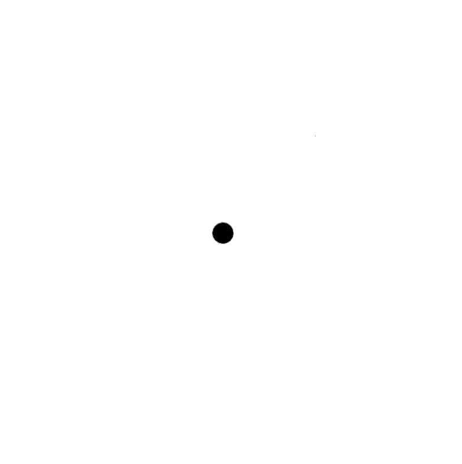

The position style property influences layout in a powerful way. By default
it has a value of static, meaning the element sits in its normal place in the
document. When it is set to relative, the element still takes up space in the
document, but now the top and left style properties can be used to move it
relative to that normal place. When position is set to absolute, the element is
removed from the normal document flow—that is, it no longer takes up space
and may overlap with other elements. Also, its top and left properties can
be used to absolutely position it relative to the top-left corner of the nearest
enclosing element whose position property isn't static, or relative to the
document if no such enclosing element exists.
We can use this to create an animation. The following document displays a
picture of a cat that moves around in an ellipse:
